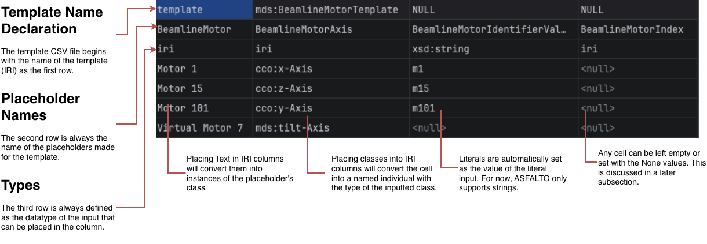
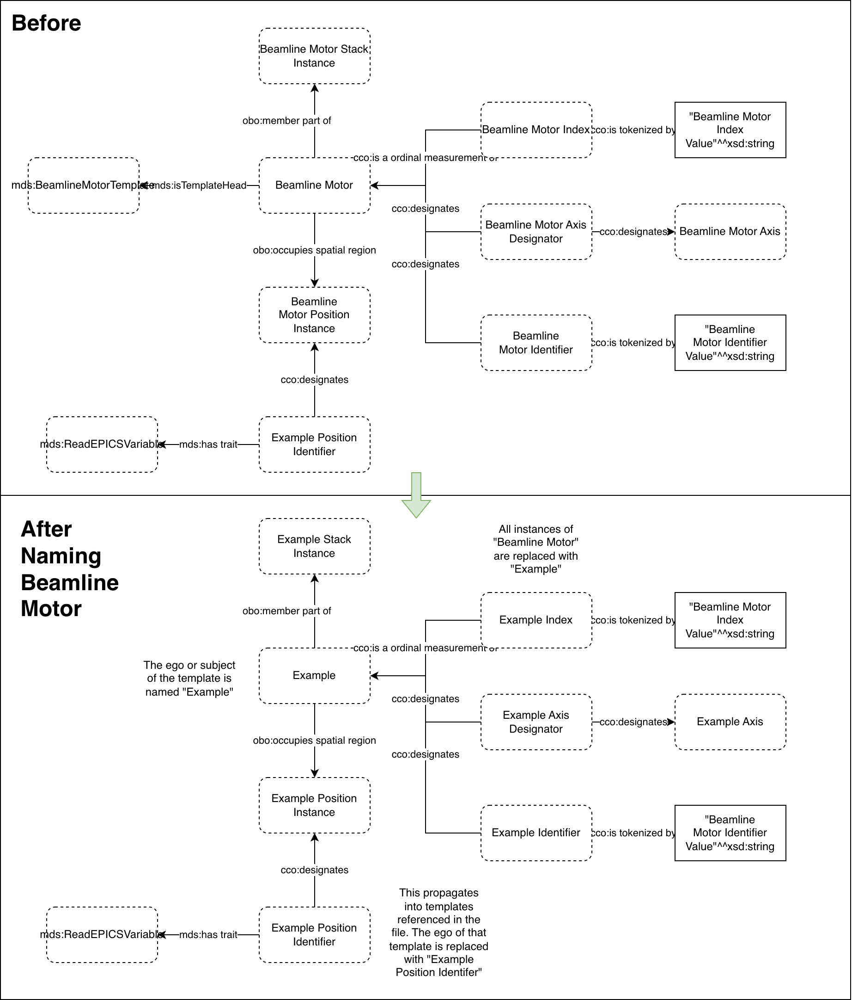

Inherited Defaults and Explicit Absence (Null vs. None)#
In the previous section, we showed you how to create and design a template diagram and convert it into a template sheet. In this section, we show you how to populate your new template sheet with values that correspond to repeated or varying terms that abide by the template you defined.
In case you need it, we will be using the following produced in the last section for this tutorial:
Having trouble? Download the figure above as an
We will be populating the sheet with the data found below:
template |
mds:BeamlineMotorTemplate |
||||||
|---|---|---|---|---|---|---|---|
BeamlineMotor |
BeamlineMotorAxis |
BeamlineMotorAxisDesignator |
BeamlineMotorIdentifier |
BeamlineMotorIdentifierValue |
BeamlineMotorIndex |
BeamlineMotorIndexValue |
LabelOfBeamlineMotorPositionIdentifierValue |
iri |
iri |
iri |
iri |
xsd:string |
iri |
xsd:string |
xsd:string |
Motor 1 |
cco:x-Axis |
m1 |
1 |
xid:m1.RBV |
|||
Motor 15 |
cco:z-Axis |
m15 |
2 |
xid:m15.RBV |
|||
Motor 101 |
cco:y-Axis |
m101 |
3 |
xid:m101.RBV |
|||
Virtual Motor 7 |
mds:tilt-Axis |
xid:v7:2:A1 |
Figure 1. Table of populated template sheet to be used in this user guide. You can find the file as motor-template-sheet-populated.csv in the examples/motor-example folder in the repo.
Parts of a Template Sheet#
A template sheet is a very simple data structure used to hold the values that will replace the placeholders in the template. The following diagram shows the different parts of this template file:
{kind=link}

Figure 2. The Components of a template sheet.
NOTE: The examples/motor-example folder will include a final populated template sheet, called motor-template_sheet-populated.csv. Feel free to copy and paste the text or rename and overwrite the motor-template_sheet.csv file.
Null Values and Nones#
The ASFALTO package deals with two types of null values that come out naturally from operating on placeholders. The first one, null, occurs when you leave a cell in the sheet blank. The second one, None, is a value you type or paste into a cell.
Use null values (or essentially leave a space empty) when you want cells to be named based on their parents as named individuals. They will exist in your ontology but they won’t have characteristics specific to them, only that they have unique IRIs. We call these inherited defaults, and they exist because templates, or ontologies in general, can describe the same system with different granularities (more specific or more high level). Reconciling them would be an astronomical effort unless the default is to say that a certain concept about them (a term) already exists.
{kind=link}

Figure 3. A diagram showing how names are inherited from parents. This behavior was introduced to solve the problem of granularity between different descriptions of the same system.
Use None values when your template deals with cases of named individuals where a variation must not have a relationship described for another. For example, a virtual motor may share a lot in common with all motors (hence the same template), but may not have an axis associated with them.
A Note of Classes for IRI Input#
By default, all names added to columns with the IRI type will become named individuals. You may add a class term inside the cell and ASFALTO will create an instance out of the class and name it based on the term parents.
NOTE: ASFALTO currently only supports one datatype, xsd:string, for literal inputs.
After you have populated the sheets, we can expand the template to get the expanded turtle file.
(.venv) $ asfalto expand motor-template_sheet.csv .
This command creates the motor-expanded.ttl file that contains all of the sheet contents converted into RDF triples (the format used for Turtle files).
You will now find your examples/motor-example folder to be filled with turtle and .stottr files. To get the final file with all the information you need, you can go ahead and run the last command:
(.venv) $ asfalto merge .
This will produce a motor-final.ttl file that contains all the classes, instances, and newly populated named individuals into one file. You can now use this file for your applications.
NOTE: These intermediate files were generated for debugging purposes, and a future ASFALTO release will give you the option to delete them.
Templates within Templates#
In the motor-final.ttl file, you will notice that the addresses for the motors, called the EPICS variables, were not included in the final file. This is because, we only refer to the template for the EPICS variable in the diagram but never actually normalize our turtle file.
In the next section, we define what normalization means and how it can work to fix our missing EPICS variables. This ability to place templates within templates becomes the bedrock for bottom-up abstraction which we will also discuss.